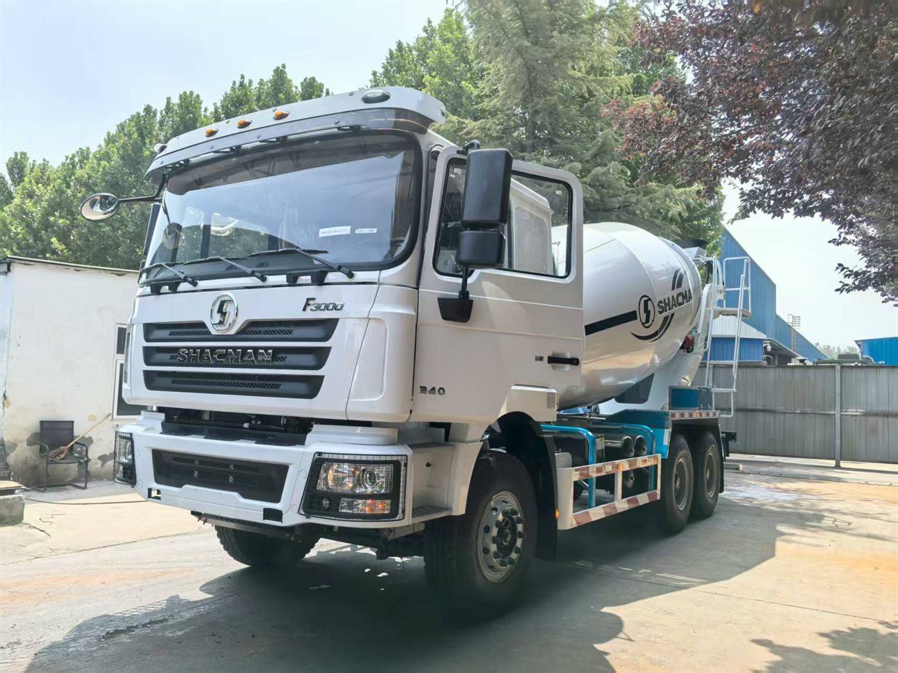

Concrete payload
Nominal drum volume is not the same as legal payload. Buyers should provide the expected concrete density and confirm the completed truck's axle loads, gross weight and local road limits.
Compare SHACMAN mixer truck chassis and body requirements around the real work cycle, not drum volume alone. This page uses a verified F3000 6x4 10m3 source configuration to show buyers what must be confirmed before an export quotation.
Request Mixer Truck QuoteWhatsApp Andy
The following technical data comes from the supplied configuration document for model SX5255GJBJT384. It is a reference for configuration discussions, not a universal specification for every market.
| Item | Verified reference specification | Buyer check |
|---|---|---|
| Drive and steering | 6x4, left-hand drive | Confirm steering side and registration requirements for the destination. |
| Wheelbase | 3775 + 1400 mm | Check turning space, jobsite access and complete-vehicle dimensions. |
| Maximum speed | 80 km/h | Confirm suitability for the planned delivery route and local requirements. |
| Engine | WEICHAI WP10.380E22 with PTO, 380 HP, 9.726 L, Euro II | Engine and emission availability must match the destination and fuel conditions. |
| Transmission | FAST 12JSD200T-B | Review grades, start frequency and loaded route conditions. |
| Axles | HANDE 9.5T front; HANDE 16T double-reduction rear axle, ratio 5.92 | Check complete-vehicle weight, legal axle limits and operating terrain. |
| Tyres | 315/80R22.5, 10 + 1 | Confirm availability and suitability for road and site surfaces. |
| Fuel tank | 400 L aluminium alloy | Compare route length, refuelling access and permitted vehicle layout. |
| Mixer body | 10 cubic metres in the source configuration | Confirm nominal volume, concrete density, legal payload and body supplier specification. |
Source boundary: chassis and mixer-body data above is transcribed from the user-provided F3000 6x4 configuration document. Public price, payment terms and delivery timing are intentionally excluded. The signed technical sheet controls the final vehicle.
Nominal drum volume is not the same as legal payload. Buyers should provide the expected concrete density and confirm the completed truck's axle loads, gross weight and local road limits.
Batching plant distance, traffic, steep grades, waiting time and discharge frequency affect drivetrain selection, cooling demand and the number of trucks required for a project.
Turning space, entrance width, overhead clearance, ground condition and discharge position can determine whether a 6x4 or 8x4 layout is practical.
A concrete mixer truck spends its working life carrying a shifting load, stopping frequently and operating both on public roads and uneven project sites. The chassis, PTO arrangement, transmission, axle ratio, tyres and braking system must therefore be reviewed as one system.
For flat urban delivery, buyers may prioritize manoeuvrability and predictable road speed. A remote construction project may instead require attention to approach roads, long grades, soft ground, high ambient temperature and limited service access. Altitude and fuel quality should also be included in the RFQ when they are relevant. Final engine, emission and drivetrain availability depends on the destination and production configuration.
Confirm nominal drum capacity, geometric volume, mixing and discharge performance, blade design and the body supplier's technical specification for the selected chassis.
Ask for the proposed hydraulic pump, motor and reducer brands or models when these details matter to maintenance planning. Do not assume one reference combination applies to every truck.
Confirm water tank capacity, filling arrangement, chute layout, extension chutes, control positions and any cleaning requirements around the buyer's batching and jobsite process.
Providing the information below helps Andy compare an available configuration with the actual duty cycle and reduces repeated clarification during procurement.
When a requirement is not yet fixed, describe the project and ask for a configuration proposal. The final specification should still be reviewed line by line before quotation and order confirmation.
| Decision factor | 6x4 discussion | 8x4 discussion |
|---|---|---|
| Access and turning | Often considered where site access and manoeuvrability are important. | Check total length, turning space and access before choosing a larger layout. |
| Capacity and axle loading | Match body capacity to the completed vehicle's legal weight and axle distribution. | Additional axle capacity does not replace destination-market weight checks. |
| Project route | For both layouts, provide grades, distance, road surface, concrete density and daily cycles. Configuration should follow the duty cycle rather than a generic model label. | |
Questions around delivery distance, drum selection, road conditions and discharge planning for a West African construction project.
Read the Benin guideA separate application guide for selecting a mixer truck around jobsite access, rainfall, route and service planning.
Read the Gabon guideReview the broader F3000 product family before deciding which chassis should support the mixer body.
View SHACMAN F3000The supplied configuration specifies a 10 cubic metre mixer body. Final body capacity and the complete-vehicle specification must be confirmed for each order and destination.
Provide the destination country and port, required mixer capacity, quantity, concrete delivery distance, road grades, emission requirement, steering position and any preferred hydraulic or discharge components.
Available chassis, engine, transmission, axle, tyre, mixer body and emission configurations depend on the destination and project requirements. The final technical sheet must be confirmed before quotation.
Inspection coordination and vehicle, loading and shipping photo updates can be discussed as part of the export order process.
Send the destination, drum capacity, quantity, route distance, road grade and emission requirement.